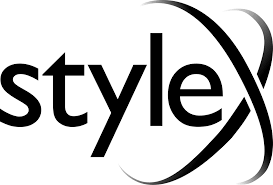
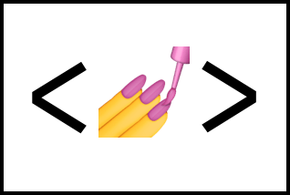

Atomic CSS: Верстка и легкость бытия
Валентин Ульянов
Atomic CSS:
Верстка и легкость бытия
Валентин Ульянов
Обо мне
- В IT больше 8 лет
- Делаю бэкенд на Node.js и тулинг
- Разрабатываю open source проект
- Выступаю на конференциях и веду
IT-сообщество в Питере на 500+ человек
Я и Atomic CSS
- В теме с 2018
- Смотрел все инструменты, у которых >20 звезд на гитхабе
Я и Atomic CSS
- В теме с 2018
- Смотрел все инструменты, у которых >20 звезд на гитхабе
- 3 года карьеры много верстал
Я и Atomic CSS
- В теме с 2018
- Смотрел все инструменты, у которых >20 звезд на гитхабе
- 3 года карьеры много верстал
- В разработку своего инструмента вложил >1000 часов
Содержание
- Проблемы верстки
- Atomic CSS как решение
- Разбор мифов
- Кейсы и примеры
- Заключение
Стандартные вопросы БЭМ
- Блок это или элемент?
- Структура каталогов?
- Как правильно делать миксы?
- *Еще вопрос*
Продвинутые вопросы БЭМ
- Уровни переопределения
- Как собирать без коллизий
- Как автоматизировать создание сущностей
Современные подходы к CSS
- Scoped решения
- CSS-in-JS
- Shadow DOM
Scoped решения
- Пишем CSS как обычно
- Переключение контекста
- Большой бандл CSS*
- Не для каждого стека
*Иногда можно сделать аглификацию, но это не точно
CSS-in-JS
-

-

-

CSS-in-JS
- Пишем CSS не как обычно
- Ограничения инструмента, баги, etc
- Не для каждого стека
- Растет размер бандла*
*При рантайм решениях
Shadow DOM
- Проблемы a11y
- Сильно зависит от стека
- Трудности с SSR*
*Declarative shadow DOM поддерживается, но не идеально
Почему Atomic CSS
- Тратим меньше мыслетоплива: названия сущностей, структура каталогов
Почему Atomic CSS
- Тратим меньше мыслетоплива: названия сущностей, структура каталогов
- Меньше CSS на клиенте: стили перестают добавляться
Почему Atomic CSS
- Тратим меньше мыслетоплива: названия сущностей, структура каталогов
- Меньше CSS на клиенте: стили перестают добавляться
- Быстрее пишем стили: короткие классы, переключение файлов
Почему Atomic CSS
- Тратим меньше мыслетоплива: названия сущностей, структура каталогов
- Меньше CSS на клиенте: стили перестают добавляться
- Быстрее пишем стили: короткие классы, переключение файлов
- Stack agnostic: можно применять на любом стеке
Экономия мыслетоплива
Тут примеры, как в atomic мы просто пишем утилиты, а в других подходах (особенно в БЭМ) надо подумать
Малый размер стилей
- Atomic CSS: 3.5KB
- CSS-in-JS: 4.0KB
- БЭМ: 5.0KB
Скорость разработки
- Atomic CSS: 2 часа*
- CSS-in-JS: 3 часа
- БЭМ: 3.5 часа
*Впервые сайт был сверстан в атомарном подходе
Atomic CSS toolkit with Sass and ergonomics for creating styles of any complexity
Сокращения
- Лаконичный код
- Удобнее писать
- Чуть меньше вес кода
Сокращения
- Лаконичный код
- Удобнее писать
- Чуть меньше вес кода
- Есть порог входа
- Подойдут не всем
Общий алгоритм сокращений кратко
- Находим свойства, которые начинаются с одинаковой буквы
Общий алгоритм сокращений кратко
- Находим свойства, которые начинаются с одинаковой буквы
- Составляем их рейтинг
Общий алгоритм сокращений кратко
- Находим свойства, которые начинаются с одинаковой буквы
- Составляем их рейтинг
- Выделяем группы
Общий алгоритм сокращений кратко
- Находим свойства, которые начинаются с одинаковой буквы
- Составляем их рейтинг
- Выделяем группы
- Составляем сокращения внутри групп
I. Алгоритм сокращения одной сущности
Название сокращаем до первой буквы свойства/значения
color => C
II. Алгоритм сокращения одной сущности
Если название из N слов, то берется первая буква из каждого слова
color-adjust => Ca
III. Алгоритм сокращения одной сущности
Если два названия имеют одну и ту же начальную букву, то в следующем названии, при сортировке их по рейтингу, добавляется буква
color => Ccursor => Cs
IV. Алгоритм сокращения одной сущности
Если название из N слов, то буква добавляется в соответствующем по порядку слове
color => Ccursor => Cscolor-scheme => Csc
I. Порядок добавления буквы
Согласная следующего слога
cursor => Cs
I. Порядок добавления буквы
Согласная следующего слога
cursor => Cs
Если следующий слог начинается на гласную, то берется ближайшая предыдущая согласная от нее
II. Порядок добавления буквы
Следующая согласная
content => Сtcontain => Cn
III. Порядок добавления буквы
Следующая гласная (без перескока через согласную)
content => Сtcounter-increment => Coi
Utility components syntax
Синтаксис, в котором утилита разделяется на компоненты, каждый из которых, соответствует части CSS-правила
Utility components syntax
@:ah_O1_h
Utility components syntax
@:ah_O1_h =>
@media (any-hover) {
}
Utility components syntax
@:ah_O1_h =>
@media (any-hover) {
.\@\:ah_O1_h {
}
}
Utility components syntax
@:ah_O1_h =>
@media (any-hover) {
.\@\:ah_O1_h {
opacity: 1
}
}
Utility components syntax
@:ah_O1_h =>
@media (any-hover) {
.\@\:ah_O1_h:hover {
opacity: 1
}
}

- CSS at-rule: брейкпоинты, @supports, etc
- CSS at-rule: брейкпоинты, @supports, etc
- pre-states - часть селектора перед классом утилиты
- CSS at-rule: брейкпоинты, @supports, etc
- pre-states - часть селектора перед классом утилиты
- Имя
- Значение
- CSS at-rule: брейкпоинты, @supports, etc
- pre-states - часть селектора перед классом утилиты
- Имя
- Значение
- post-states - часть селектора после класса утилиты
То же самое, что inline-стили
Это для тех, кто плохо знает CSS
Atomic CSS - низкоуровневый
Чем лучше вы знаете CSS...
- Тем лучше будет ваш код
- Тем больше вы сможете сделать на чистом CSS
❌
❌
✅
❌
❌
❌
.Bgc-red_h\,fv:hover,
.Bgc-red_h\,fv:focus-visible {
background-color: red
}
@s:apcr4/3@:dm_Mxw40u =>
@supports (aspect-ratio: 4/3) {
}
@s:apcr4/3@:dm_Mxw40u =>
@supports (aspect-ratio: 4/3) {
@media (display-mode: fullscreen) {
}
}
@s:apcr4/3@:dm_Mxw40u =>
@supports (aspect-ratio: 4/3) {
@media (display-mode: fullscreen) {
.\@s\:apcr4\/3\@\:dm_Mxw40u {
}
}
}
@s:apcr4/3@:dm_Mxw40u =>
@supports (aspect-ratio: 4/3) {
@media (display-mode: fullscreen) {
.\@s\:apcr4\/3\@\:dm_Mxw40u {
max-width: 10rem
}
}
}
Проблематично реиспользовать стили, особенно, вне компонентов
Алиасы

Алиасы

Преимущества алиасов
- Существуют только в build-time - реиспользуются имеющиеся утилиты
Преимущества алиасов
- Существуют только в build-time - реиспользуются имеющиеся утилиты
- Меньше чем обычных классов - (почти) нет проблем с неймингом
Преимущества алиасов
- Существуют только в build-time - реиспользуются имеющиеся утилиты
- Меньше чем обычных классов - (почти) нет проблем с неймингом
- Можно редактировать in-place через замену подстрок
Слишком длинные className
Сравнение длины class

Сравнение длины class

Best practices
- Custom properties
- Современные возможности CSS
Best practices
- Custom properties
- Современные возможности CSS
- Работа с контекстом
Custom properties
- Прокидывание стилей в компонент
- Цвета и темы
Прокидывание стилей
Пример
Работа с контекстом
Контекст - специальная утилита, которая не примеряет стилей, но которую удобно комбинировать в сложных селекторах.
Работа с контекстом
Контекст - специальная утилита, которая не примеряет стилей, но которую удобно комбинировать в сложных селекторах.
Обозначается как ^ в синтаксисе утилит.
^:lc:>_D-f =>
.-Ctx:last-child > .\^\:lc\>_D-f {
display: flex
}
Контекст
- Можно использовать с любыми утилитами
- Можно как угодно комбинировать в states
- Может быть именованным
^one:h_C-red =>
.-Ctx-one:hover .\^one\:h_C-red {
color: red
}
Техники работы с контекстом
- Group hover/focus/etc
- API компонента
- CSS-only интерактивность
Большие проекты на Atomic CSS
Вряд ли подойдет для
- Rich UI - Google docs
- Огромный продукт / экосистема - Яндекс
Альтернативы
- Много динамики: CSS-in-JS
Альтернативы
- Много динамики: CSS-in-JS
- Rich UI: Canvas, WASM, $mol
Альтернативы
- Много динамики: CSS-in-JS
- Rich UI: Canvas, WASM, $mol
- Огромный продукт / экосистема: $mol
Инвестиционная история
Лучше день потерять, потом за 5 минут долететь
Выводы
- Не 1 фреймворк
- Не замена CSS
Выводы
- Не 1 фреймворк
- Не замена CSS
- Методология
Вопросы?
Презентация: